Shimotsuma, Ibaraki: things to do, food and stays
Shimotsuma · Ibaraki
Shimotsuma
Highlighted on the Ibaraki map.

Stay
ホテルルートイン下妻
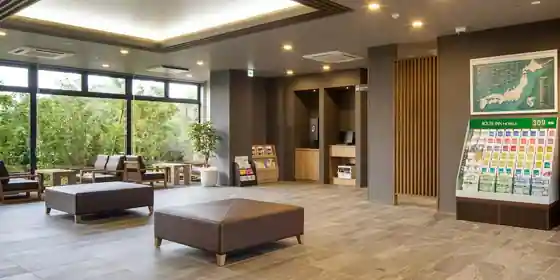
Hotel Route Inn Shimozuma
Hotel at Betsukomyosekijinko Onsen in Hiranuma, Shimotsuma with a large communal bath.
ビアスパークしもつま
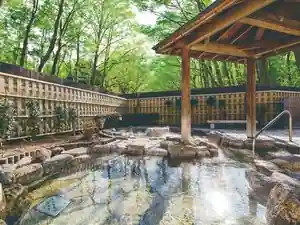
Biasu Park Shimotsuma
Dining
ドラゴンラーメン
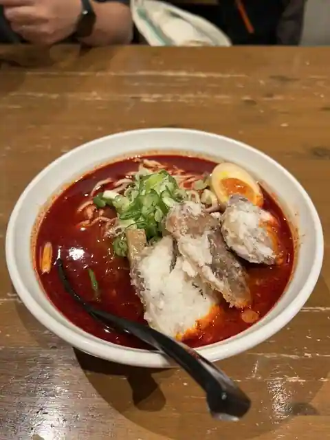
Doragon Ramen
そば処きぬ
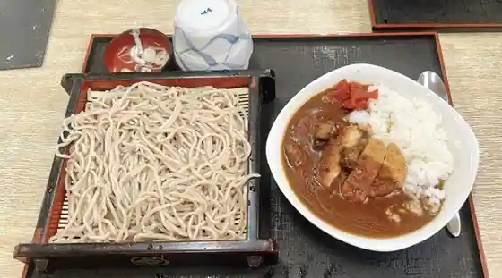
Soba Tokoro Kinu
とんこつらーめん 黒竜
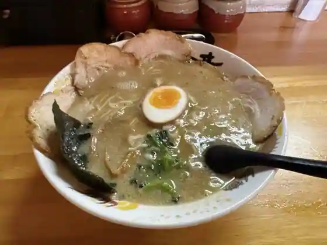
Tonkotsu Ramen Kokuryu
いづみや 下妻店
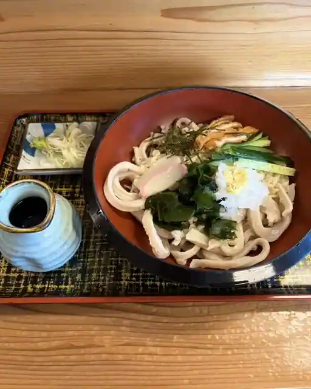
Izumiya Shimozuma
チャンプル・コーナー
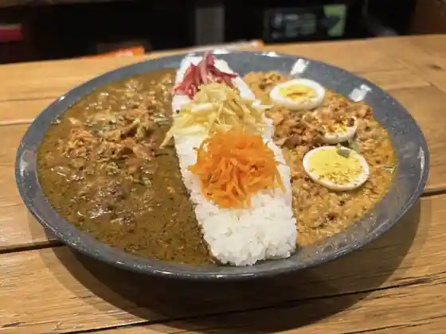
Chanpuru Kona
ペンヤ食堂
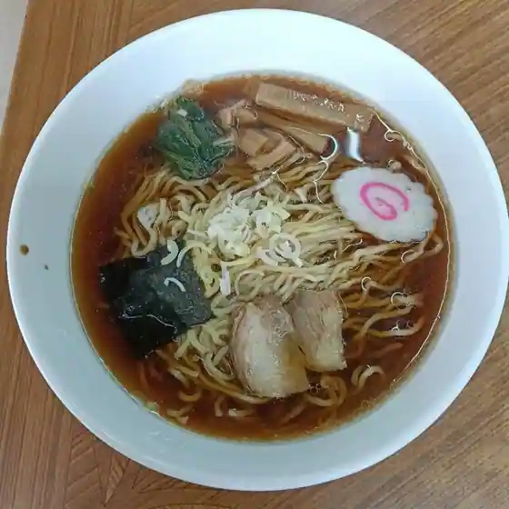
Penya Shokudo
そば処 二城
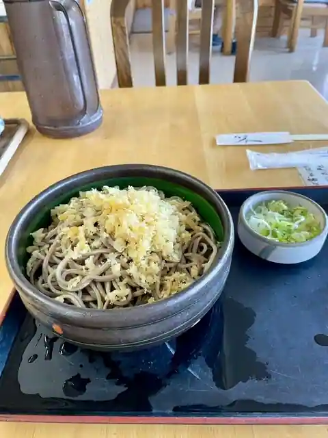
Soba Tokoro Ni Shiro
ベーカリーしもんぱん
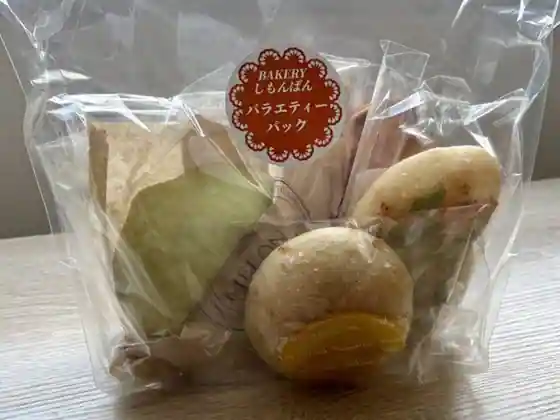
Bakery Shimonpan
下妻食堂 陽陽
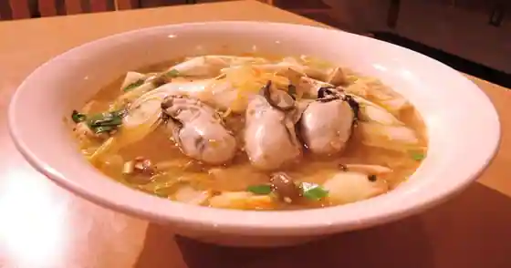
Shimozuma Shokudo Yo Yo
ゑびすや
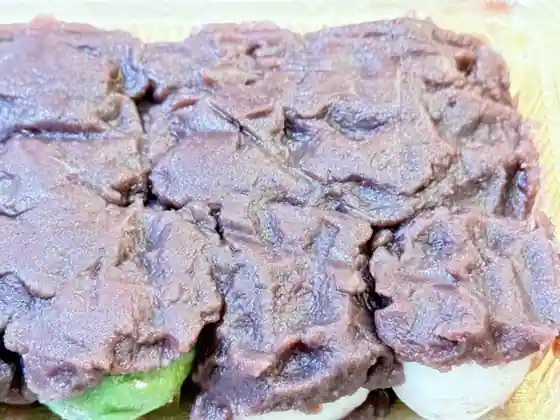
Ebisuya
めいじん亭
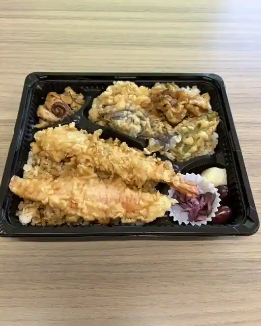
Meijin Tei
中華美食房ユニース
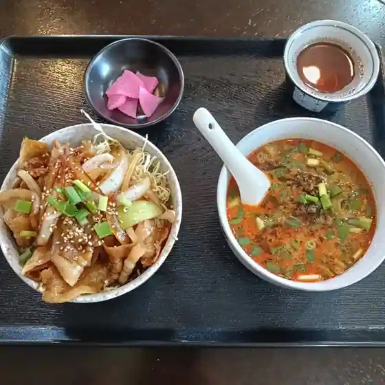
Chuka Bishoku Bo Yunisu
ポルコロッソ
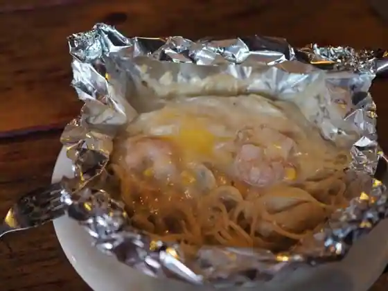
Porukorosso
道の駅しもつま
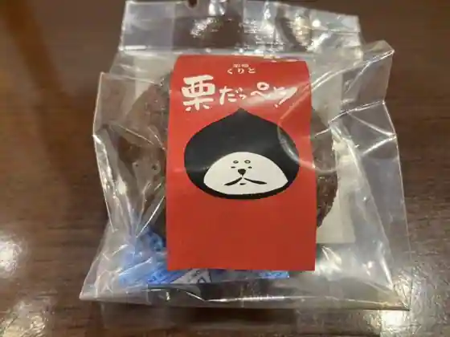
Michi No Eki Shimotsuma
しもん亭
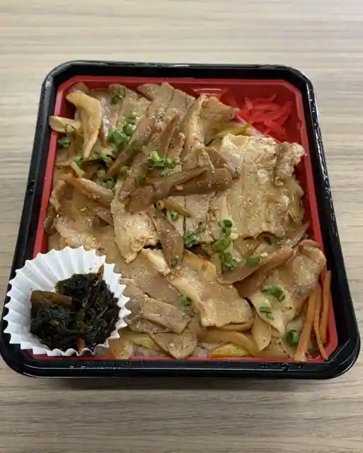
Shimon Tei
らーめん うそだっぺー
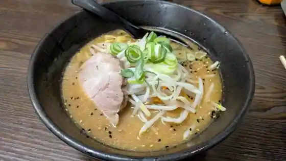
Ramen Usodappe
ラーメンショップ 大木店
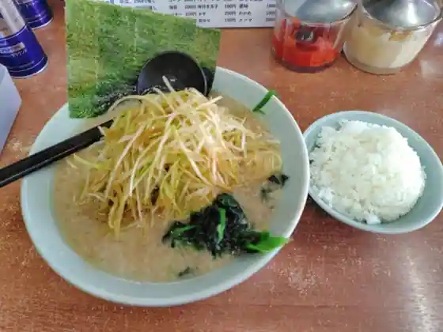
Ramen Shoppu Taiboku
うどんっ子
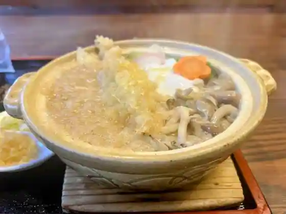
Udontsu Ko
割烹小島
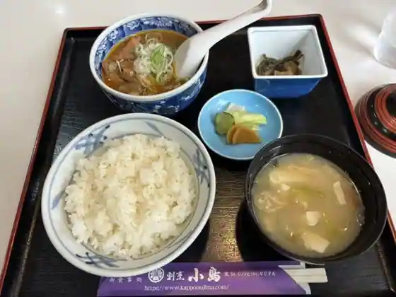
Kappo Kojima
タイレストラン カムルー
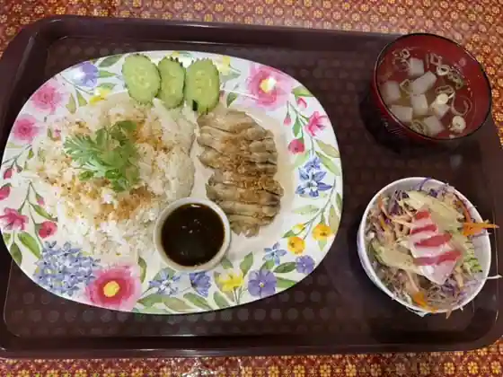
Tai Restaurant Kamuru
芽キャベツ 砂沼公園通り店
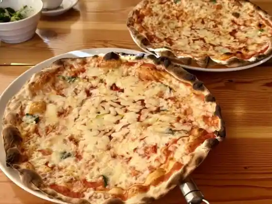
Me Kyabetsu Suna Numa Koen Tori
筑波サーキットドライバーズサロン
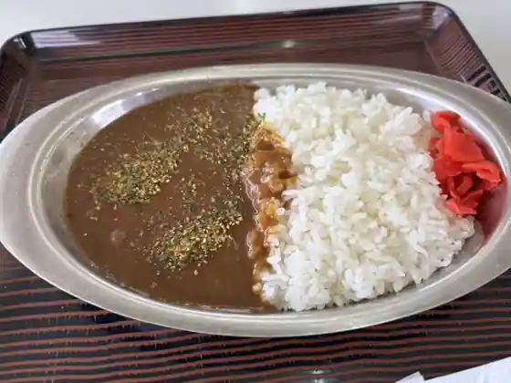
Tsukuba Sakittodoraibazusaron
魚介拉麺 大勝軒
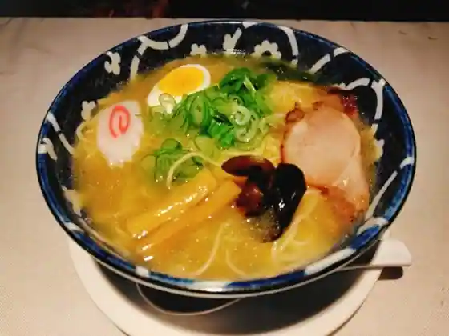
Gyokai Ramen Taisho Ken
萬来
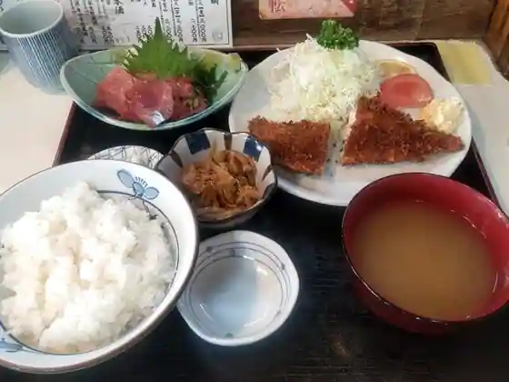
Banrai
Sights
Homikku Fureai Park
Taiho Hachiman Shrine

Roadside Station Shimotsuma

Shimotsuma Onsen Biasu Park Shimotsuma

Suna Numa Koiki Park

WaiWai Domu Shimotsuma
San Ho no Eki San SUN Sanuma
Yasuragi no Sato Shimotsuma Nosambutsu Chiyokawa Chokubai Tokoro
Kokaigawa
Me Kyabetsu Suna Numa Mise
Roadside Station Shimotsuma Soba Uchi Meijin Tei
Kojima Soan Ato
Shimotsuma Furusato Museum